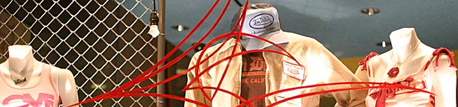

The idea behind covering an intersection as gaudy and tacky as State and Rush Streets was to capture that which makes the area so unique; namely, the people and the neon signs. Only the neon half of the equation was present, complicating matters somewhat. The photographer and I showed up at that middling time between the end of the business day and the beginning of the nightlife, freeing us to judge the section with impunity, free of human intervention . Ah, to be arbitrary.
The terrace: Where to smoke your cigars like a good bond trader. Rating: 7.7.
As the light of day slowly faded and the bond traders all retuned home from their days of, well, trading bonds, I stood and soaked in the scenery. There's nothing quite like the glow of neon over a well-landscaped strip of greenery to set your urban heart aflame. The signs bringing such joyful light to the area belong to Gibson's, Carmine's and Frog Bar. The patrons smoking their cigars just added to the ambience: There's very little as American Dream-esque as slightly pudgy white-collar workers surrounded by twiggy blondes and fried appetizers at an outdoor table. It restores my faith in America , to be honest. In a world that lacks absolutes, some stereotypical aspects of the culture don't change.
While I was pondering the Gold Coast's rendition of Chicago 's motto, Urbs in horto , the Rush Street bus pulled up and a high school-age girl stepped off. The event would normally have been unremarkable, but there was a glint from her cell phone that broke my reverie. I've never seen a blinged-out phone, much less a high school girl with a blinged-out phone. There's another ideal for which I should be striving: How to get a phone that would be the envy of Paris Hilton.
Of psychics, Tarot readings and the Jared diet. Rating: 8.7.
There's nothing like cooperation, as we all learned at a very young age from Sesame Street . However, most of us limit the sentiment to getting along with others, to better cooperate with co-workers in order to see a radical, revolutionary coup take over the office. We don't typically apply it to inanimate objects, say, store signs. But it is somewhat refreshing to see the stereotypically corporate sandwich chain Subway link arms and sing “Kumbaya” with Mrs. Devon who, according to her sign, does “readings.” There has to be some underhanded plot to all this. Maybe Mrs. Devon knows some dirt about Jared – that he's really a fictitious figure, or that he's recently ballooned, Oprah-style, to more than his original weight – that would make a national chain eatery share sign space.
A more investigative reporter would have picked up a Subway turkey club and headed directly upstairs for some hardcore palm reading. That reporter would have asked the infamous Mrs. Devon exactly what he had just eaten and would have been told – because psychics are never wrong – that dinner consisted of pesto linguine at Carmine's. Granted, that's making a huge assumption, because I'm sure the omnipotent seer above Subway would have been able to poke holes in that plot and would have known I was doing this for kicks, not for journalistic integrity. I took the easy way out and made up the above exchange, so I'm giving Mrs. Devon quite the benefit of the doubt with her rating.
| go to page 2 |